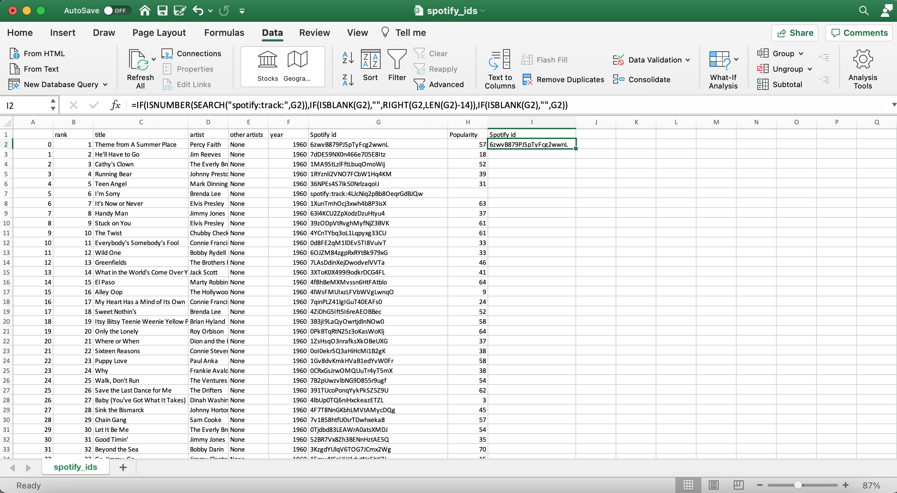

Billboard Year-End Charts Analysis
The Billboard Year-End chart is a chart published by Billboard each year that displays yearly rankings of the top 100 songs, which are determined by the Billboard company themself. But does Billboard really rank their charts based on measures such as popularity, as they claim?
To view the project with all the source code, click here. For the GitHub repository, click here.
Data source: https://en.wikipedia.org/wiki/Billboard_Year-End_Hot_100_singles_of_1960 (replace 1960 with any year between 1960-2020)
Brief Overview
Every year, Billboard releases chart rankings of the top 100 songs of the year. Each billboard chart year starts and ends around the month of December. According to Billboard, rankings are determined based on factors such as sales, amount of streams on music streaming services such as Spotify, and how frequently songs are played on radio stations. Is this true that Billboard ranks their charts according to these factors?
In this project, I collected data of every song that has appeared on the Billboard Year-End charts from years 1960-2020, along with measures such as popularity and other audio features of each song, to answer the question above. I also used the collected data to observe if there were any common characteristics among songs that appeared on Billboard charts, if there were any relationships among variables such as the audio features of songs and the year it was ranked on the charts, and to explore which artists and songs appeared most often.
Outline of Analysis:
- Web Scraping Wikipedia's Billboard Year-End Charts
- Extracting Spotify Ids (using Spotify's API) and cleaning data
- Extracting Spotify Audio Features (using Spotify's API) to add even more data
- Exploring Billboard's Hot 100 Year-End Charts (1960-2020) with visuals
Part 1: Web Scraping Wikipedia's Billboard Year-End Charts
This part extracts song information (rank, title, and artist) from Wikipedia pages for Billboard's Year-End Hot 100 charts for years 1960-2020.
Website: https://en.wikipedia.org/wiki/Billboard_Year-End_Hot_100_singles_of_1960 (Replace 1960 with any desired year between 1960-2020)
Note that there are three years (1963, 1966, 1975) that had an original list, but were revised by Billboard due to errors or recalculations. So the old lists eventually got replaced with a newer list. We will account for these changes and use the revised lists to collect the data in our web scraping.
Import necessary libraries for scraping websites:import csv
import time
import requests
import bs4
# Wikipedia Billboard Year-End pages from 1960-Present follow this format
base_url = "https://en.wikipedia.org/wiki/Billboard_Year-End_Hot_100_singles_of_{}"
Below is the code used to web scrape information:
# initizialize empty list
song_list = []
# loop through each year and extract relevant song information to list
for year in range(1960,2020):
res = requests.get(base_url.format(year))
soup = bs4.BeautifulSoup(res.text, "lxml")
# break out of loop if website technical issues occur
if res.status_code != 200:
print("ERROR. CANNOT SCRAPE ANYMORE.")
break
# select revised list if it exists, else get the original list
try:
selection = soup.select('.wikitable')[1]
except:
selection = soup.select('.wikitable')[0]
tr = selection.select('tr')
# add each row to song list
for item in tr[1:]:
row_list = []
# append rankings
rank = item.select('td')[0].text
row_list.append(rank)
# append song titles
title = item.select('td')[1].text
row_list.append(title.strip('"'))
# append song artists
artist = item.select('td')[2].text
row_list.append(artist.strip('\n'))
# append Billboard year
row_list.append(year)
# append row with all of the data above
song_list.append(row_list)
# slowdown to avoid making quick requests
time.sleep(5)
Let's output the first 5 rows and last 5 rows of our list of scraped data.
First 5 rows: [['1', 'Theme from A Summer Place', 'Percy Faith', 1960], ['2', "He'll Have to Go", 'Jim Reeves', 1960], ['3', "Cathy's Clown", 'The Everly Brothers', 1960], ['4', 'Running Bear', 'Johnny Preston', 1960], ['5', 'Teen Angel', 'Mark Dinning', 1960]]
Last 5 rows: [['96', 'Eyes on You', 'Chase Rice', 2019], ['97', 'All to Myself', 'Dan + Shay', 2019], ['98', 'Boyfriend', 'Ariana Grande and Social House', 2019], ['99', 'Walk Me Home', 'Pink', 2019], ['100', 'Robbery', 'Juice Wrld', 2019]]
Seems like everything is working correctly. We still need song information for the year 2020, so we'll go ahead and do that now using similar code as above, but accounting for the different HTML formatting used in the Wikipedia page for the year 2020. If we check the first and last 5 rows of the 2020 list, it seems like everything is working as intended.
First 5 rows: [['1', 'Blinding Lights', 'The Weeknd', 2020], ['2', 'Circles', 'Post Malone', 2020], ['3', 'The Box', 'Roddy Ricch', 2020], ['4', "Don't Start Now", 'Dua Lipa', 2020], ['5', 'Rockstar', 'DaBaby featuring Roddy Ricch', 2020]]
Last 5 rows: [['96', 'More Than My Hometown', 'Morgan Wallen', 2020], ['97', "Lovin' on You", 'Luke Combs', 2020], ['98', 'Said Sum', 'Moneybagg Yo', 2020], ['99', 'Slide', 'H.E.R. featuring YG', 2020], ['100', 'Walk Em Down', 'NLE Choppa featuring Roddy Ricch', 2020]]
With our final procedure, we will put everything we gathered together into a csv file called wikipedia_scraper.csv.
| rank | title | artist | year |
|---|---|---|---|
| 1 | Theme from A Summer Place | Percy Faith | 1960 |
| 2 | He'll Have to Go | Jim Reeves | 1960 |
| ... | ... | ... | ... |
| 99 | Slide | H.E.R. featuring YG | 2020 |
| 100 | Walk Em Down | NLE Choppa featuring Roddy Ricch | 2020 |
Part 2: Extracting Spotify Ids (using Spotify's API) and cleaning data
In this part, Spotify URIs (Spotify ids) will be extracted using web developer tools from Spotify's Web API. With these Spotify URIs, we can retrieve song feature information such as the song's popularity, duration, loudness, etc.
Documentation of Spotify's Web API: https://developer.spotify.com/documentation/web-api/
Imports:import pandas as pd
# for using Spotify Web API
import spotipy
from spotipy.oauth2 import SpotifyClientCredentials
Start by reading the csv file we used for web scraping songs and artists.
music_data = pd.read_csv('wikipedia_scraper.csv', encoding='ISO-8859-1')Taking a look at first 5 rows of csv file:
| rank | title | artist | year | |
|---|---|---|---|---|
| 0 | 1 | Theme from A Summer Place | Percy Faith | 1960 |
| 1 | 2 | He'll Have to Go | Jim Reeves | 1960 |
| 2 | 3 | Cathy's Clown | The Everly Brothers | 1960 |
| 3 | 4 | Running Bear | Johnny Preston | 1960 |
| 4 | 5 | Teen Angel | Mark Dinning | 1960 |
Spotify Web API
Before we can start using Spotify's Web API, we need to link Spotify to an application. I already created my own application on the website, and will save the application's client id and client secret to a file I created called Spotify.txt. Then I will save these information so that Spotify can authenticate access to their Web API.
file = 'Spotify.txt'
# store client id and client secret
with open(file,'r') as f:
f = f.read().splitlines()
cid = f[0]
secret = f[1]
# authenticate requests to the Spotify Web API
client_credentials_manager = SpotifyClientCredentials(client_id=cid, client_secret=secret)
sp = spotipy.Spotify(client_credentials_manager=client_credentials_manager)With authentication permitted, we will use artist name and song title from our dataframe to attempt and search for the corresponding Spotify URI. After doing so, we obtain the following table:
| rank | title | artist | year | Spotify id | Popularity | |
|---|---|---|---|---|---|---|
| 0 | 1 | Theme from A Summer Place | Percy Faith | 1960 | 6zwvB879PJSpTyFcg2wwnL | 57.0 |
| 1 | 2 | He'll Have to Go | Jim Reeves | 1960 | 7dDE59NX0n466e705E8Itz | 18.0 |
| 2 | 3 | Cathy's Clown | The Everly Brothers | 1960 | 1MA9StLzlFftLbuqOmoWij | 52.0 |
| 3 | 4 | Running Bear | Johnny Preston | 1960 | 1RYznli2VNO7FCbW1Hq4KM | 39.0 |
| 4 | 5 | Teen Angel | Mark Dinning | 1960 | 36NPEs4S7ik50NrlzaqoIJ | 31.0 |
| ... | ... | ... | ... | ... | ... | ... |
| 6096 | 96 | More Than My Hometown | Morgan Wallen | 2020 | 0eBXyY4SatzpE7opnzgXvz | 83.0 |
| 6097 | 97 | Lovin' on You | Luke Combs | 2020 | 0nYvjcSlCgjcwogQAwIwNp | 76.0 |
| 6098 | 98 | Said Sum | Moneybagg Yo | 2020 | 3sKz6Sd72K0ofPWcJPPk6H | 75.0 |
| 6099 | 99 | Slide | H.E.R. featuring YG | 2020 | NaN | NaN |
| 6100 | 100 | Walk Em Down | NLE Choppa featuring Roddy Ricch | 2020 | NaN | NaN |
6101 rows × 6 columns
# Information about data:
music_data.info()<class 'pandas.core.frame.DataFrame'> RangeIndex: 6101 entries, 0 to 6100 Data columns (total 6 columns): # Column Non-Null Count Dtype --- ------ -------------- ----- 0 rank 6101 non-null object 1 title 6101 non-null object 2 artist 6101 non-null object 3 year 6101 non-null int64 4 Spotify id 4950 non-null object 5 Popularity 4950 non-null float64 dtypes: float64(1), int64(1), object(4) memory usage: 286.1+ KB
# checking for amount of null values in Spotify id column
music_data['Spotify id'].isnull().sum()1151
Splitting the artist column
There are a lot of songs without a Spotify id (1151 total). One reason why the Spotify ids for these songs were not extracted is because the get_spotify_data function does not recognize artists in the artist column that have multiple artists. These data contain strings such as "featuring", "and", and "&", so we'll split the artists into multiple columns that contain the primary artist and featured artists. Then we'll reattempt and get the Spotify ids along with the song popularity.
| rank | title | artist | other artists | year | Spotify id | Popularity | |
|---|---|---|---|---|---|---|---|
| 0 | 1 | Theme from A Summer Place | Percy Faith | None | 1960 | 6zwvB879PJSpTyFcg2wwnL | 57.0 |
| 1 | 2 | He'll Have to Go | Jim Reeves | None | 1960 | 7dDE59NX0n466e705E8Itz | 18.0 |
| 2 | 3 | Cathy's Clown | The Everly Brothers | None | 1960 | 1MA9StLzlFftLbuqOmoWij | 52.0 |
| 3 | 4 | Running Bear | Johnny Preston | None | 1960 | 1RYznli2VNO7FCbW1Hq4KM | 39.0 |
| 4 | 5 | Teen Angel | Mark Dinning | None | 1960 | 36NPEs4S7ik50NrlzaqoIJ | 31.0 |
| ... | ... | ... | ... | ... | ... | ... | ... |
| 6096 | 96 | More Than My Hometown | Morgan Wallen | None | 2020 | 0eBXyY4SatzpE7opnzgXvz | 83.0 |
| 6097 | 97 | Lovin' on You | Luke Combs | None | 2020 | 0nYvjcSlCgjcwogQAwIwNp | 76.0 |
| 6098 | 98 | Said Sum | Moneybagg Yo | None | 2020 | 3sKz6Sd72K0ofPWcJPPk6H | 75.0 |
| 6099 | 99 | Slide | H.E.R. | YG | 2020 | 2rTnVB1bvwxHtaIl4uVu7f | 77.0 |
| 6100 | 100 | Walk Em Down | NLE Choppa | Roddy Ricch | 2020 | 4cSSL3YafYjM3yjgFO1vJg | 80.0 |
6101 rows × 7 columns
# information about data:
music_data.info()<class 'pandas.core.frame.DataFrame'> RangeIndex: 6101 entries, 0 to 6100 Data columns (total 7 columns): # Column Non-Null Count Dtype --- ------ -------------- ----- 0 rank 6101 non-null object 1 title 6101 non-null object 2 artist 6101 non-null object 3 other artists 6101 non-null object 4 year 6101 non-null int64 5 Spotify id 5690 non-null object 6 Popularity 5690 non-null float64 dtypes: float64(1), int64(1), object(5) memory usage: 333.8+ KB
# check for amount of null values from Spotify id column
music_data['Spotify id'].isnull().sum()411
Dealing with the remaining, missing Spotify ids
We dropped the amount of null values from 1151 to 411. At this point, there's nothing else we can do with python to extract the remaining Spotify ids, so the rest must be done manually (using Excel).
Below is the Excel file for spotify_ids.csv. We can see that row 7 (with artist Brenda Lee), for example, has missing information.

We can then use Excel's filter tool to filter by rows with missing Spotify ids, and then use Spotify to look up the ids for each of these songs.

So most songs should have a Spotify id now. However, in the image below, there are still very few rows with missing information. Also, in column G, some rows have ids that start with "spotify:track:" and other rows without it. We'll add in another column that will remove "spotify:track" in the id, if it exists, and keep all other rows as is with either the original id or blank information using a rather long Excel formula.
To understand the formula used, it checks and searches if the phrase "spotify:track" exists in the cell for G2 or not. If it does, then it will insert the id into a new cell while removing the phrase "spotify:track". If cell G2 does not contain the phrase "spotify:track", then it will check if the cell is blank or not. If the cell is blank, then the new cell will be blank, and if not, then the original id will be inserted into the new cell.
As a result of the formula, it will look something like cell I2. We can then use the autofill feature to fill in the rest of the column.
After manually inserting Spotify ids and doing some cleaning in Excel, we import the csv file.
new_music_data = pd.read_csv('spotify_ids.csv', encoding='ISO-8859-1')
# information about data
new_music_data.info()<class 'pandas.core.frame.DataFrame'> RangeIndex: 6101 entries, 0 to 6100 Data columns (total 9 columns): # Column Non-Null Count Dtype --- ------ -------------- ----- 0 Unnamed: 0 6101 non-null int64 1 rank 6101 non-null object 2 title 6101 non-null object 3 artist 6101 non-null object 4 other artists 6101 non-null object 5 year 6101 non-null int64 6 Spotify id 6098 non-null object 7 Popularity 5690 non-null float64 8 Spotify id.1 6098 non-null object dtypes: float64(1), int64(2), object(6) memory usage: 429.1+ KB
new_music_data.isnull().sum()Unnamed: 0 0 rank 0 title 0 artist 0 other artists 0 year 0 Spotify id 3 Popularity 411 Spotify id.1 3 dtype: int64
We see that there are 3 rows without a Spotify id. Let's check what these rows are.
| Unnamed: 0 | rank | title | artist | other artists | year | Spotify id | Popularity | Spotify id.1 | |
|---|---|---|---|---|---|---|---|---|---|
| 2182 | 2182 | 82 | It's Now or Never | John Schneider | None | 1981 | NaN | NaN | NaN |
| 2297 | 2297 | 97 | Goin' Down | Greg Guidry | None | 1982 | NaN | NaN | NaN |
| 3772 | 3772 | 72 | ESPN Presents The Jock Jam | Various Artists | None | 1997 | NaN | NaN | NaN |
Removing rows with missing information
There are still 3 Spotify ids that are missing. Since these are just a very small portion of our entire dataset, it should be okay to just drop these rows.
After dropping the 3 rows, we now have no more rows with missing Spotify ids. We just need to deal with missing Popularity information.
new_music_data.isnull().sum()Unnamed: 0 0 rank 0 title 0 artist 0 other artists 0 year 0 Spotify id 0 Popularity 408 Spotify id.1 0 dtype: int64
Cleaning dataframe
But first, let's clean the columns with our new dataframe by dropping the index column and old spotify id column, renaming columns, and reordering the columns.
| rank | title | artist | other artists | year | Spotify id | Popularity | |
|---|---|---|---|---|---|---|---|
| 0 | 1 | Theme from A Summer Place | Percy Faith | None | 1960 | 6zwvB879PJSpTyFcg2wwnL | 57.0 |
| 1 | 2 | He'll Have to Go | Jim Reeves | None | 1960 | 7dDE59NX0n466e705E8Itz | 18.0 |
| 2 | 3 | Cathy's Clown | The Everly Brothers | None | 1960 | 1MA9StLzlFftLbuqOmoWij | 52.0 |
| 3 | 4 | Running Bear | Johnny Preston | None | 1960 | 1RYznli2VNO7FCbW1Hq4KM | 39.0 |
| 4 | 5 | Teen Angel | Mark Dinning | None | 1960 | 36NPEs4S7ik50NrlzaqoIJ | 31.0 |
| ... | ... | ... | ... | ... | ... | ... | ... |
| 6096 | 96 | More Than My Hometown | Morgan Wallen | None | 2020 | 0eBXyY4SatzpE7opnzgXvz | 83.0 |
| 6097 | 97 | Lovin' on You | Luke Combs | None | 2020 | 0nYvjcSlCgjcwogQAwIwNp | 76.0 |
| 6098 | 98 | Said Sum | Moneybagg Yo | None | 2020 | 3sKz6Sd72K0ofPWcJPPk6H | 75.0 |
| 6099 | 99 | Slide | H.E.R. | YG | 2020 | 2rTnVB1bvwxHtaIl4uVu7f | 77.0 |
| 6100 | 100 | Walk Em Down | NLE Choppa | Roddy Ricch | 2020 | 4cSSL3YafYjM3yjgFO1vJg | 80.0 |
6098 rows × 7 columns
Filling in the missing popularity data
Let's fill in the missing data with popularity information using Spotify's Web API.
popularities = []
for id_ in new_music_data['Spotify id']:
feature = sp.track(id_)['popularity']
popularities.append(feature)
new_music_data['Popularity'] = popularities# count amount of missing values
new_music_data.isnull().sum()rank 0 title 0 artist 0 other artists 0 year 0 Spotify id 0 Popularity 0 dtype: int64
There are no more missing values in our dataframe, so let's go ahead and save this into our csv file called spotify_ids.csv.
Part 3: Extracting Spotify Audio Features (using Spotify's API) to add even more data
Our dataset currently has some information about each song title such as artists, Spotify id, and popularity, but there's a lot more features that we can add on to each of the songs in our dataset. Luckily, Spotify has audio features available for each song, so we will extract the audio features with Spotify's Web API.
More info on Spotify's audio features: https://developer.spotify.com/documentation/web-api/reference/tracks/get-audio-features/
Setup
import pandas as pd
import spotipy # for Spotify's Web API
from spotipy.oauth2 import SpotifyClientCredentialsRead csv file
# read the csv file containing each song information
music_data = pd.read_csv('spotify_ids.csv', encoding='ISO-8859-1')
music_data.drop('Unnamed: 0',axis=1,inplace=True)music_data| rank | title | artist | other artists | year | Spotify id | Popularity | |
|---|---|---|---|---|---|---|---|
| 0 | 1 | Theme from A Summer Place | Percy Faith | None | 1960 | 6zwvB879PJSpTyFcg2wwnL | 57 |
| 1 | 2 | He'll Have to Go | Jim Reeves | None | 1960 | 7dDE59NX0n466e705E8Itz | 18 |
| 2 | 3 | Cathy's Clown | The Everly Brothers | None | 1960 | 1MA9StLzlFftLbuqOmoWij | 52 |
| 3 | 4 | Running Bear | Johnny Preston | None | 1960 | 1RYznli2VNO7FCbW1Hq4KM | 39 |
| 4 | 5 | Teen Angel | Mark Dinning | None | 1960 | 36NPEs4S7ik50NrlzaqoIJ | 31 |
| ... | ... | ... | ... | ... | ... | ... | ... |
| 6096 | 96 | More Than My Hometown | Morgan Wallen | None | 2020 | 0eBXyY4SatzpE7opnzgXvz | 83 |
| 6097 | 97 | Lovin' on You | Luke Combs | None | 2020 | 0nYvjcSlCgjcwogQAwIwNp | 76 |
| 6098 | 98 | Said Sum | Moneybagg Yo | None | 2020 | 3sKz6Sd72K0ofPWcJPPk6H | 75 |
| 6099 | 99 | Slide | H.E.R. | YG | 2020 | 2rTnVB1bvwxHtaIl4uVu7f | 77 |
| 6100 | 100 | Walk Em Down | NLE Choppa | Roddy Ricch | 2020 | 4cSSL3YafYjM3yjgFO1vJg | 80 |
6098 x 7 columns
Extracting Audio Features
Now that we have everything set up, let's take a look at what audio features are available from Spotify. We'll test this out on a song from our dataframe. We'll choose the first song from our dataframe called "Theme from a Summer Place" by Percy Faith. To get the audio features, we'll need to use its Spotify id.
# grab spotify id of song
song_id = music_data.loc[0]['Spotify id']
print(song_id)6zwvB879PJSpTyFcg2wwnL
# extract audio features for our chosen song
sp.audio_features(song_id)[{'danceability': 0.326,
'energy': 0.326,
'key': 0,
'loudness': -15.144,
'mode': 1,
'speechiness': 0.0297,
'acousticness': 0.591,
'instrumentalness': 0.918,
'liveness': 0.494,
'valence': 0.87,
'tempo': 186.232,
'type': 'audio_features',
'id': '6zwvB879PJSpTyFcg2wwnL',
'uri': 'spotify:track:6zwvB879PJSpTyFcg2wwnL',
'track_href': 'https://api.spotify.com/v1/tracks/6zwvB879PJSpTyFcg2wwnL',
'analysis_url': 'https://api.spotify.com/v1/audio-analysis/6zwvB879PJSpTyFcg2wwnL',
'duration_ms': 142693,
'time_signature': 3}]
We were sucessfully able to get the audio features for a song, along with initializing a dictionary that will store each audio feature and its value. Let's get the audio features for all the songs in our data.
Final look at dataframe
After having all the audio features and cleaning all the data, we end up with our final dataframe.
| rank | title | artist | other artists | year | Spotify id | Popularity | danceability | energy | key | loudness | mode | speechiness | acousticness | instrumentalness | liveness | valence | tempo | duration | time_signature | |
|---|---|---|---|---|---|---|---|---|---|---|---|---|---|---|---|---|---|---|---|---|
| 0 | 1 | Theme from A Summer Place | Percy Faith | None | 1960 | 6zwvB879PJSpTyFcg2wwnL | 57 | 0.326 | 0.3260 | 0 | -15.144 | 1 | 0.0297 | 0.59100 | 0.918000 | 0.4940 | 0.870 | 186.232 | 142.693 | 3 |
| 1 | 2 | He'll Have to Go | Jim Reeves | None | 1960 | 7dDE59NX0n466e705E8Itz | 18 | 0.469 | 0.2440 | 1 | -15.702 | 1 | 0.0357 | 0.97400 | 0.016200 | 0.8450 | 0.577 | 88.271 | 134.333 | 3 |
| ... | ... | ... | ... | ... | ... | ... | ... | ... | ... | ... | ... | ... | ... | ... | ... | ... | ... | ... | ... | ... |
| 6099 | 99 | Slide | H.E.R. | YG | 2020 | 2rTnVB1bvwxHtaIl4uVu7f | 77 | 0.827 | 0.4690 | 10 | -9.141 | 0 | 0.3410 | 0.08070 | 0.000008 | 0.2070 | 0.196 | 97.028 | 238.321 | 4 |
| 6100 | 100 | Walk Em Down | NLE Choppa | Roddy Ricch | 2020 | 4cSSL3YafYjM3yjgFO1vJg | 80 | 0.867 | 0.7440 | 2 | -5.171 | 1 | 0.2270 | 0.26800 | 0.000000 | 0.0713 | 0.645 | 84.005 | 173.288 | 4 |
music_data.info()<class 'pandas.core.frame.DataFrame'> RangeIndex: 6098 entries, 0 to 6097 Data columns (total 20 columns): # Column Non-Null Count Dtype --- ------ -------------- ----- 0 rank 6098 non-null object 1 title 6098 non-null object 2 artist 6098 non-null object 3 other artists 6098 non-null object 4 year 6098 non-null int64 5 Spotify id 6098 non-null object 6 Popularity 6098 non-null int64 7 danceability 6098 non-null float64 8 energy 6098 non-null float64 9 key 6098 non-null int64 10 loudness 6098 non-null float64 11 mode 6098 non-null int64 12 speechiness 6098 non-null float64 13 acousticness 6098 non-null float64 14 instrumentalness 6098 non-null float64 15 liveness 6098 non-null float64 16 valence 6098 non-null float64 17 tempo 6098 non-null float64 18 duration 6098 non-null float64 19 time_signature 6098 non-null int64 dtypes: float64(10), int64(5), object(5) memory usage: 952.9+ KB
Our data cleaning is complete, and we are ready to convert this into a csv file.
music_data.to_csv('spotify_complete.csv')Part 4: Exploring Billboard's Hot 100 Year-End Charts (1960-2020) with visuals
Exploratory data analysis outline:
- Get a high level understanding of the data (shape, columns, data types, etc.)
- Comparisons of which artists and songs appear most often on Billboard charts
- Exploring popularity of songs and seeing if that has an influence on being ranked
- Looking at other characteristics (danceability, energy, etc.) of songs
1: Understanding the data
The data
spotify_complete.csv contains every song that has appeared on the Billboard Hot 100 Year-end charts. It contains song information such as the artist(s), year appeared on Billboard, ranking, and audio features. The data was pulled on January 7, 2021.
| Column | Definition |
|---|---|
| rank | ranking of the song on Billboard |
| title | the name of the song |
| artist | the main artist who performed the song |
| other artists | other artists who performed the song |
| year | year that the song has appeared on the Billboard chart |
| Spotify id | spotify ID of the song |
| Popularity | popularity of the song at the time when data was extracted |
| danceability | how suitable a song is for dancing |
| energy | measure of intensity and activity |
| key | key of the song |
| loudness | overall loudness in decibels |
| modality | modality of song (0 = Minor, 1 = Major) |
| speechiness | overall measure of spoken words |
| acousticness | measure of whether the song is acoustic |
| instrumentalness | measure of whether the song contains vocals |
| liveness | probability the song was performed live |
| valence | measure of musical positiveness |
| tempo | overall estimated speed or pace of song in beats per minute |
| duration | how long the song is in seconds |
| time_signature | overall time signature of a song |
More information on Spotify's audio features: https://developer.spotify.com/documentation/web-api/reference/tracks/get-audio-features/
Importing libraries that we will use:
import numpy as np
import pandas as pd
import matplotlib.pyplot as plt
import seaborn as sns# Loading the data
df = pd.read_csv('spotify_complete.csv', encoding='ISO-8859-1')
df.drop("Unnamed: 0", axis=1, inplace=True) # this is an index column that we already havedf.shape(6089, 20)
Next, we'll take a look at the data and its properties to understand what we're working with.
| rank | title | artist | other artists | year | Spotify id | Popularity | danceability | energy | key | loudness | mode | speechiness | acousticness | instrumentalness | liveness | valence | tempo | duration | time_signature | |
|---|---|---|---|---|---|---|---|---|---|---|---|---|---|---|---|---|---|---|---|---|
| 0 | 1 | Theme from A Summer Place | Percy Faith | None | 1960 | 6zwvB879PJSpTyFcg2wwnL | 57 | 0.326 | 0.3260 | 0 | -15.144 | 1 | 0.0297 | 0.59100 | 0.918000 | 0.4940 | 0.870 | 186.232 | 142.693 | 3 |
| 1 | 2 | He'll Have to Go | Jim Reeves | None | 1960 | 7dDE59NX0n466e705E8Itz | 18 | 0.469 | 0.2440 | 1 | -15.702 | 1 | 0.0357 | 0.97400 | 0.016200 | 0.8450 | 0.577 | 88.271 | 134.333 | 3 |
| ... | ... | ... | ... | ... | ... | ... | ... | ... | ... | ... | ... | ... | ... | ... | ... | ... | ... | ... | ... | ... |
| 6099 | 99 | Slide | H.E.R. | YG | 2020 | 2rTnVB1bvwxHtaIl4uVu7f | 77 | 0.827 | 0.4690 | 10 | -9.141 | 0 | 0.3410 | 0.08070 | 0.000008 | 0.2070 | 0.196 | 97.028 | 238.321 | 4 |
| 6100 | 100 | Walk Em Down | NLE Choppa | Roddy Ricch | 2020 | 4cSSL3YafYjM3yjgFO1vJg | 80 | 0.867 | 0.7440 | 2 | -5.171 | 1 | 0.2270 | 0.26800 | 0.000000 | 0.0713 | 0.645 | 84.005 | 173.288 | 4 |
df.info()<class 'pandas.core.frame.DataFrame'> RangeIndex: 6098 entries, 0 to 6097 Data columns (total 20 columns): # Column Non-Null Count Dtype --- ------ -------------- ----- 0 rank 6098 non-null int64 1 title 6098 non-null object 2 artist 6098 non-null object 3 other artists 6098 non-null object 4 year 6098 non-null int64 5 Spotify id 6098 non-null object 6 Popularity 6098 non-null int64 7 danceability 6098 non-null float64 8 energy 6098 non-null float64 9 key 6098 non-null int64 10 loudness 6098 non-null float64 11 mode 6098 non-null int64 12 speechiness 6098 non-null float64 13 acousticness 6098 non-null float64 14 instrumentalness 6098 non-null float64 15 liveness 6098 non-null float64 16 valence 6098 non-null float64 17 tempo 6098 non-null float64 18 duration 6098 non-null float64 19 time_signature 6098 non-null int64 dtypes: float64(10), int64(6), object(4) memory usage: 952.9+ KB
df.describe()| rank | year | Popularity | danceability | energy | key | loudness | mode | speechiness | acousticness | instrumentalness | liveness | valence | tempo | duration | time_signature | |
|---|---|---|---|---|---|---|---|---|---|---|---|---|---|---|---|---|
| count | 6098.000000 | 6098.000000 | 6098.000000 | 6098.000000 | 6098.000000 | 6098.000000 | 6098.000000 | 6098.000000 | 6098.000000 | 6098.000000 | 6098.000000 | 6098.000000 | 6098.000000 | 6098.000000 | 6098.000000 | 6098.000000 |
| mean | 50.491801 | 1989.998196 | 57.206789 | 0.627328 | 0.620230 | 5.290095 | -8.403208 | 0.692358 | 0.072196 | 0.260426 | 0.028466 | 0.178272 | 0.604125 | 119.430655 | 231.916182 | 3.955395 |
| std | 28.869856 | 17.612298 | 17.275689 | 0.151422 | 0.190002 | 3.589750 | 3.545482 | 0.461555 | 0.077274 | 0.259243 | 0.128605 | 0.149371 | 0.239647 | 27.478116 | 63.693433 | 0.272839 |
| min | 1.000000 | 1960.000000 | 0.000000 | 0.000000 | 0.000020 | 0.000000 | -26.113000 | 0.000000 | 0.000000 | 0.000024 | 0.000000 | 0.015000 | 0.000000 | 0.000000 | 29.688000 | 0.000000 |
| 25% | 25.250000 | 1975.000000 | 47.000000 | 0.532000 | 0.484000 | 2.000000 | -10.703750 | 0.000000 | 0.032200 | 0.043225 | 0.000000 | 0.085700 | 0.418000 | 98.942250 | 193.390250 | 4.000000 |
| 50% | 50.000000 | 1990.000000 | 60.000000 | 0.642000 | 0.634000 | 5.000000 | -7.817000 | 1.000000 | 0.041800 | 0.166000 | 0.000004 | 0.122000 | 0.623000 | 118.029000 | 228.000000 | 4.000000 |
| 75% | 75.000000 | 2005.000000 | 70.000000 | 0.734000 | 0.770000 | 8.000000 | -5.652250 | 1.000000 | 0.069300 | 0.418750 | 0.000341 | 0.226000 | 0.809000 | 134.185500 | 261.900250 | 4.000000 |
| max | 100.000000 | 2020.000000 | 100.000000 | 0.988000 | 0.997000 | 11.000000 | -1.101000 | 1.000000 | 0.911000 | 0.991000 | 0.964000 | 0.991000 | 0.991000 | 233.429000 | 1561.133000 | 5.000000 |
2: Comparing frequency of songs and artists
Which artists have appeared on the Billboard charts most often?# count number of unique, main artists
df['artist'].nunique()2368
It is important to note that these counts are based on the artists being the main artist of their respective song. It does not take into account that the artists could be featured in a song with other singers. Nevertheless, most of these artists are pop artists.
Let's check what the highest ranking that these artists have ever obtained.
Drake 1 Elton John 1 Mariah Carey 1 The Beatles 1 Usher 1 Madonna 2 Michael Jackson 2 Rihanna 2 Janet Jackson 3 Taylor Swift 5 Name: rank, dtype: int64
Half of these artists have achieved rank #1 in the history of Billboard Year-End charts. The other half are very close, having ranked at least top 5.
How do songs that were performed solo compare to those performed by multiple artists?The next thing I want to take a look at is to observe the percentage of songs that were performed solo by a single artist versus the percentage of songs that were performed with multiple artists.
# counts number of songs that don't have other performing artists
# (in other words, count songs with a single performer)
df[df['other artists'] != "None"]["other artists"].count()
1220

Interestingly enough, the majority of the songs that appeared on the Billboard Year-End charts are those that were performed with multiple performers.
Are there songs that have appeared most often on Billboard charts?artist title 3 Doors Down Here Without You 2 Kryptonite 2 5 Seconds of Summer Youngblood 2 69 Boyz Tootsee Roll 2 98 Degrees Because of You 2 Aaliyah The One I Gave My Heart To 2 Ace of Base All That She Wants 2 Adele Hello 2 Rolling in the Deep 2 Akon Smack That 2 dtype: int64
Seems like the most amount of times that a song can occur on the Billboard Year-End charts is just 2. There isn't much else we can analyze from here so let's move on.
3: Exploring the popularity field
What are the most and least popular songs?Top 10 most popular songs:
Top 10 least popular songs:
The most popular songs are those that appeared on the Billboard chart of 2020. The last popular songs all appeared on charts before 2000 and have a popularity score of 0.
How does popularity of songs change by year?From the barplot above, we can see that songs generally get more popular as the year increases.
Key points to make:First, it looks like the most popular songs were those that appeared on the Billboard charts for 2020. This makes sense as the data was extracted around the time that Billboard released their 2020 Year-End chart, and the measure of the Popularity field is based on how popular the song was at the time the data was extracted.
Second, the least popular songs were those that appeared on older Billboard charts, mainly in years before 2000. Again, based on the date of when the data was extracted, we expect that older songs will not be as popular as newly released songs.
Since the data was extracted on January 7, 2021, we will focus on exploring the popularity of songs that appeared in the 2020 Year-End chart. We will then see if there how popularity is distributed among these songs.
Does Billboard's 2020 Year-End chart really take into account of a song's popularity for rankings?A lot of these songs are quite popular! The lowest popularity score is only in the 70s. It may seem like Billboard really does take into account of a song's popularity for ranking songs that appear in their charts. Out of curiosity, let's see which songs were the most and least popular of 2020.
Most popular songs of 2020:
Least popular songs of 2020:
What is the correlation between ranking and popularity?One more thing I'd like to explore is if there is some association between the popularity of a song and the rank it gets on the Billboard charts. Since the popularity field is largely determined by when the data was pulled, it would make most sense to just limit our observation to the 2020 Year-End chart.
# correlation coefficient between ranking and popularity
round(abs(df[df['year'] == 2020]['rank'].corr(df[df['year'] == 2020]['Popularity'])),2)0.49
With a correlation coefficient of r = 0.49, there is a moderately strong relationship between the popularity of a song and how high it ranks on the Billboard Year-End charts. That is, the higher popularity a song is, the higher rank it is on the chart. Popularity does have some role on affecting how high a song will rank on the chart.
4: Exploring the audio features
Let's explore the audio features of each Billboard song and see how they are distributed and if they have any correlations with other fields.
How are audio features correlated with themselves and with year/rank?- Strongest correlations occur with energy vs. loudness, where songs with higher energy are generally associated with songs with higher loudness.
- Moderate correlations occur with valence vs. danceability, and valence vs. energy.
- All other correlations have weak correlations.
- The only features with (moderately) strong positive correlations with year are loudness, energy, and danceability. That is, as the year increases, music tends to be more loud, energetic, and have higher danceability to their songs.
- One feature, acousticness, seems to have the lowest correlation with year. As the year increases, songs somewhat tend to have less of an acoustic style to them.
- There are no correlations whatsoever between the features of a song versus ranking. It seems like the characteristics of songs have no affect on how they get ranked on the Billboard charts.
Distribution of audio features
What audio features are most common? How are they all distributed?- Danceability, energy, tempo, and loudness seems to be the most normally distributed features
- Most songs are played in a 4/4 time signature
- Songs on the Billboard charts tend to score low on its speechiness, liveness, and acousticness
- Almost all songs have a very low instrumentalness score, meaning most songs contain vocal tracks
Conclusion
I was initially interested in seeing how Billboard chooses what songs to rank on their charts and what the characteristics of these songs were. After exploring the data, it seems that the most common artists were singers in the Pop genre, with singers like Madonna and Rihanna taking most of the spots in the Billboard charts. Most of the songs were performed with other singers rather than solo.
Exploring the popularity of the songs was most intriguing to me as the analysis did seem to show that Billboard does tend to choose popular songs, as they claimed. I was also fascinated by looking at the characteristics of the songs. Newer released songs tend to be more popular than older songs. Newer songs are also generally louder, more energetic, and danceable than older songs, which really shows how music in general has changed over time.